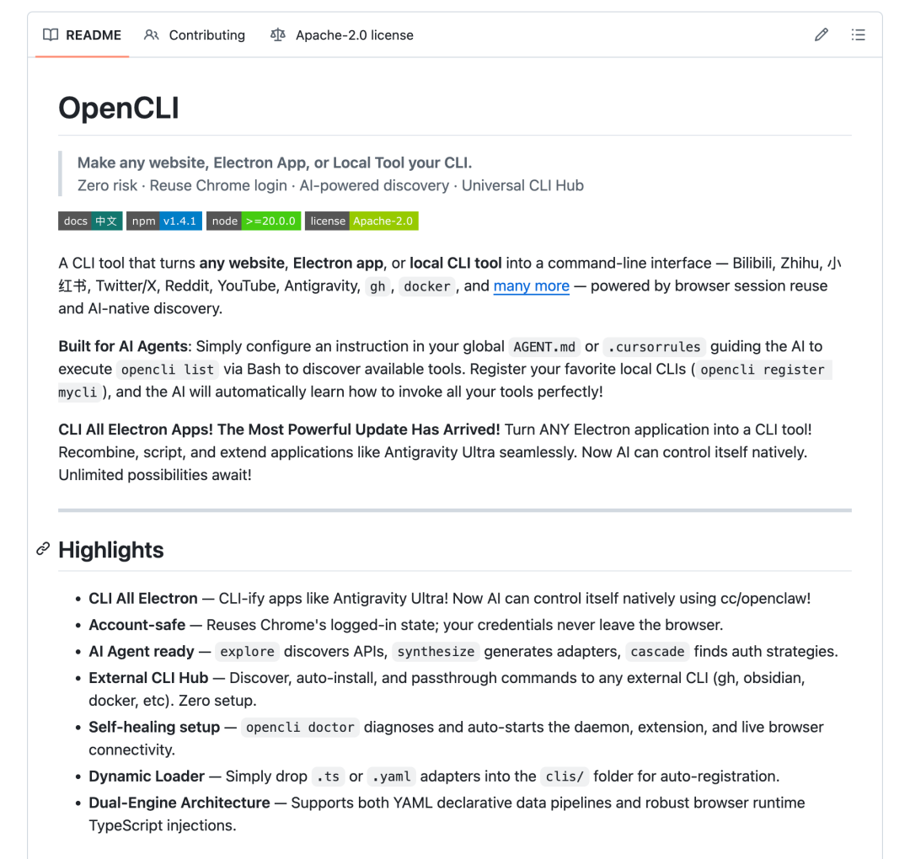
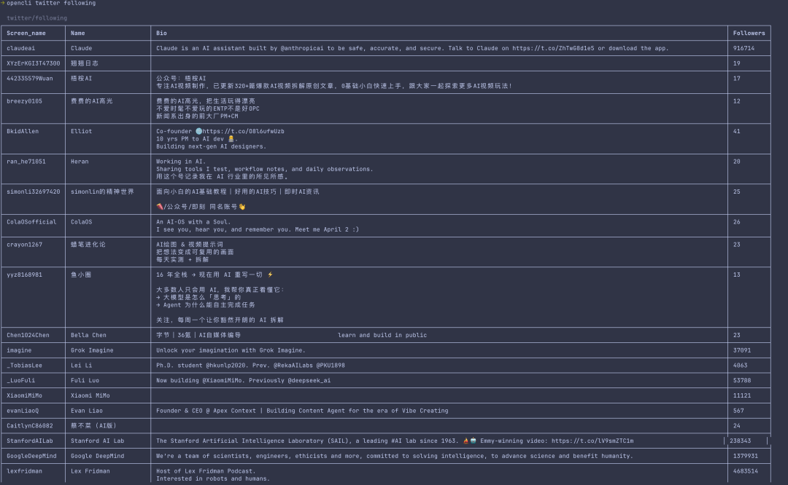
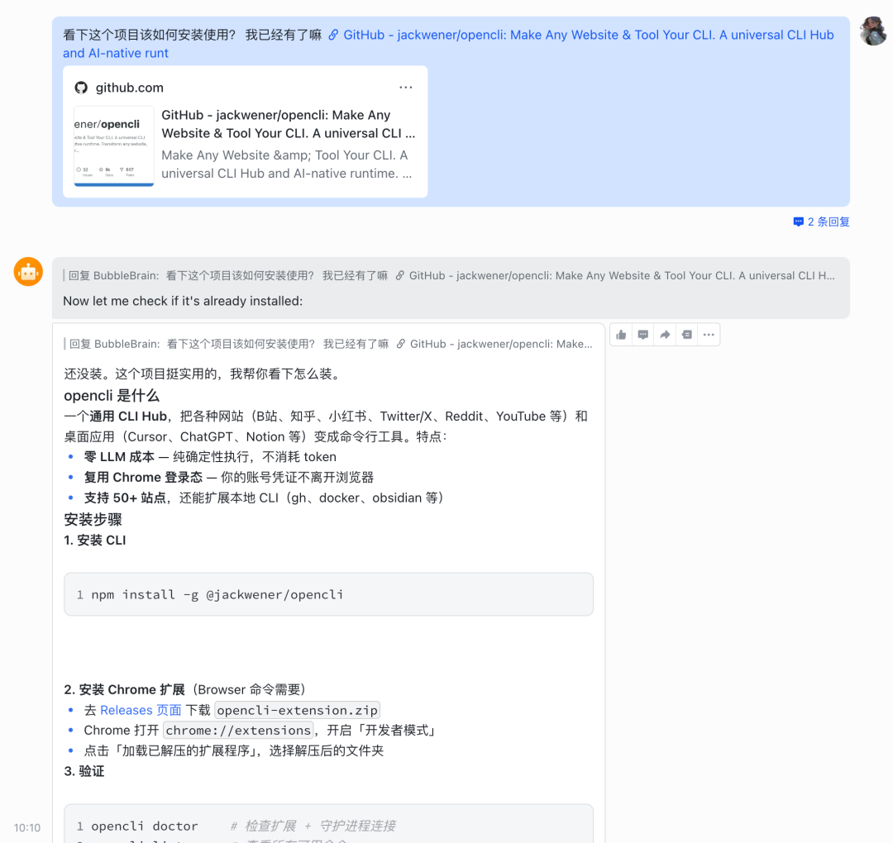
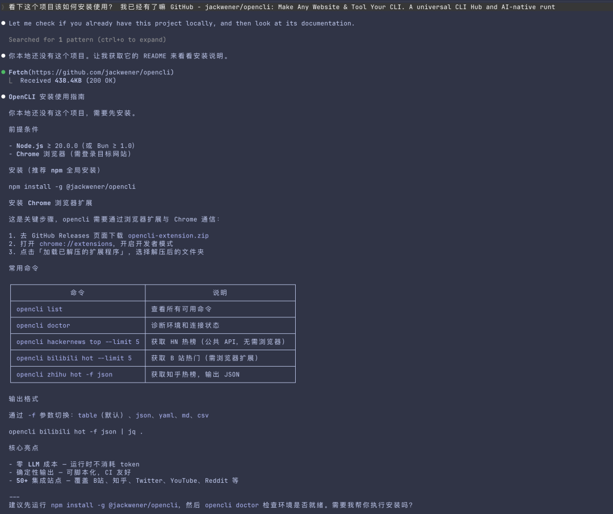
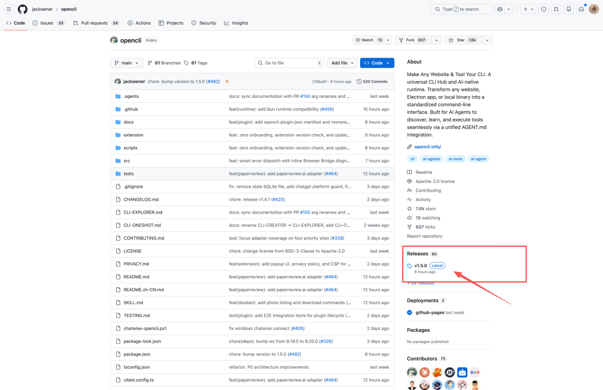
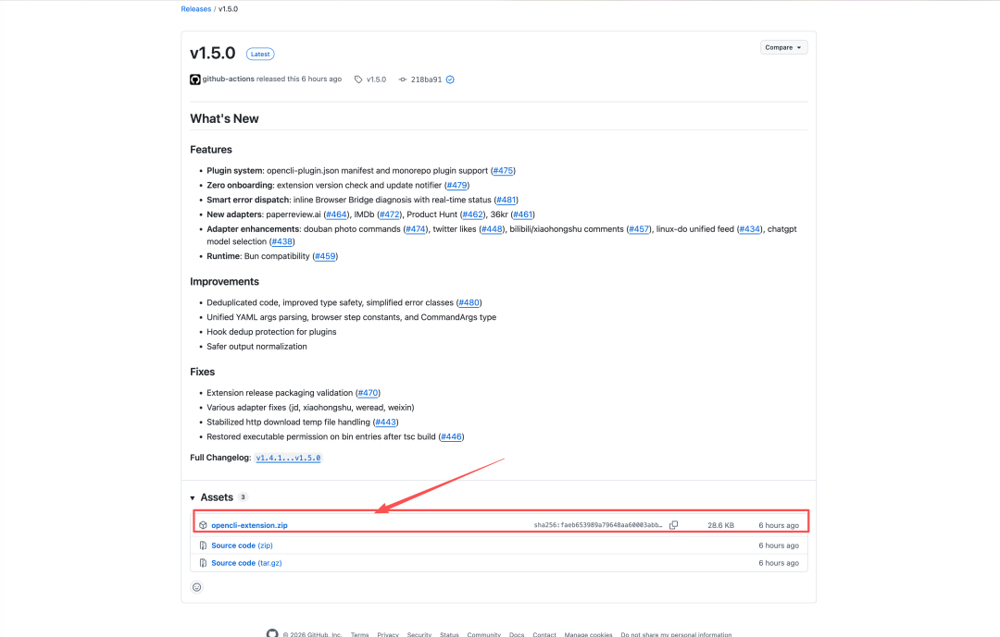
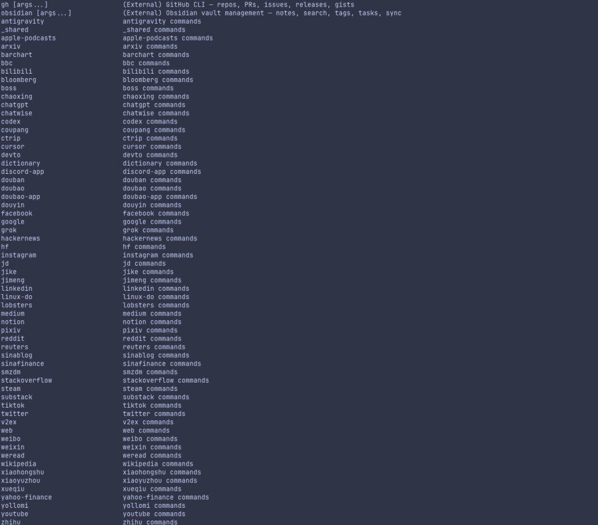
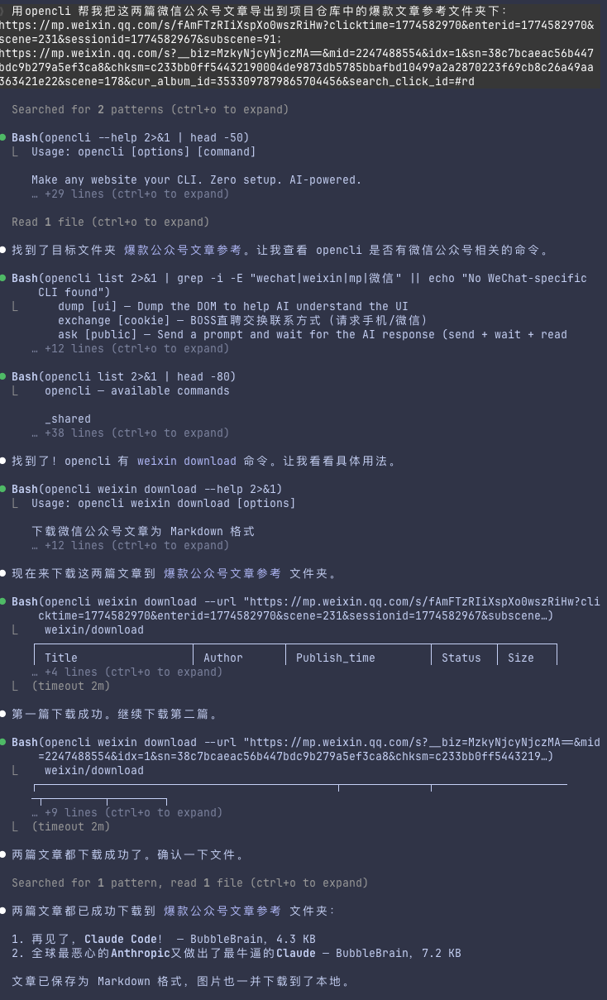

这是Bubble2026年的第34篇更新
OpenCLI，7.5k Star，一行命令接管 50+ 个平台——X、YouTube、知乎、小红书、公众号、甚至 Boss 直聘，全部变成终端里的一条指令。
不需要任何 API Key，不需要任何密钥配置，只要你 Chrome 开着、账号登着，Agent 就能直接替你抓热榜、发内容、导文章。
我试了一下，说实话有点上头。以前每天在各个平台之间反复横跳的那些操作，现在全丢给 Agent 了。
项目网址：github.com/jackwener/opencli

先简单介绍一下这个OpenCLI。
它其实就是一个开源的命令行工具。这个命令行工具能够帮你把所有的网页甚至一些桌面端的应用变成你能在终端里直接操作的命令。
比如，我想知道今天X上趋势热点是哪些，直接就是一行命令敲下：
或者，我想知道我关注了哪些账号，也是一行命令敲下：

整个操作非常的丝滑。当然，做成CLI形式肯定就不是专门给人用的了，把它交给Agent来用才是最方便的。
一句话讲完核心能力：任何你能在浏览器里手动操作的平台，OpenCLI 都能变成一行命令交给 Agent。
现在我们来讲讲如何让你的Claude Code，Codex，或者龙虾用起这个工具。
我说实话，有了这些Agent之后，我自己是基本没看过这些项目里的readme 讲如何安装使用。
绝大部分时候我都是丢给Agent，让它告诉我如何安装。


相信我，任何一个Agent都能完整的告诉你如何装这些。
整个安装的过程就两步骤。第一步是一行命令，
你可以自己操作这一行命令，也可以直接跟Agent 说，"你来帮我安装吧"。
第二步是在Chrome浏览器里安装一个插件。


把这个安装包下载下来然后解压，然后打开chrome浏览器的开发者模式：
chrome://extensions/
点击加载已解压的扩展程序，选择解压后的文件夹，这样就算完成了安装。
注意：Chrome 浏览器必须一直开着，关了就废了。因为 OpenCLI 是通过Chrome浏览器来控制、操作的，所以你要确保你的chrome浏览器是打开，并且账号状态是登陆的。
整个opencli工具其实支持超级多的平台操作。

你能想到的或者想不到的平台，它都有。包括国内的微信公众号、知乎、小红书、海外的HackerNews、X、YouTube等等都有。
我想了想我自己的需求，试了试它的微信公众号的，你只要给文章的链接，就可以支持导出公众号文章为markdown格式。
markdown格式就天然的和我的obsidian仓库完美集成，以后想找一些爆款文章作为参考，可以很方便的直接在obsidian里让agent查阅就行了。

单个命令始终只是开胃菜。真正上头的是可以让 Agent 把多个平台串成一条自动化流水线。
举个我已经在跑的例子：每天早上 8 点，Agent 自动抓 X 热榜 + 知乎热榜 + HackerNews 首页，筛出 AI 相关的内容，生成一份早报摘要，直接存到我的 Obsidian 仓库里。
流程大概是这样：
1opencli twitter trending→ 拿到 X 热点
2opencli zhihu hot→ 拿到知乎热榜
3opencli hackernews top→ 拿到 HN 首页
4Agent 汇总三个平台的结果，过滤出 AI 相关条目，生成 markdown 早报
5存入 Obsidian 的AI热点/目录，文件名按日期自动命名
如果手动做这套流程？打开三个网站、逐个浏览、复制粘贴、整理格式，少说 40 分钟。现在 Agent + OpenCLI 跑完全程，快到起飞。
我思索了下，为啥这玩意这么好用。
我觉得有几个点吧，
第一个是，它非常方便，配置简单。
它不需要你配置什么API KEY，也不需要任何的密钥之类的东西，唯一要配置的就是装了插件，然后保证你的chrome打开并登陆；
第二个就是它支持的平台真的很多。
我甚至看到了boss直聘……真就以后hr 可以直接靠Agent来工作了……
第三点我觉得是，它面向Agent友好。
2026年的主流观点，已经从面向人类构建软件，变成面向Agent构建软件了。
大家更关心的是，AI能不能用上我们的网页、应用、平台等等。
OpenCLI就是一个经典的面向Agent构建的工具。只要一行命令，Agent就知道该如何用它。
我一直认为Agent和工具之间应该是相辅相成的作用，好的工具会无限放大Agent的能力；而牛逼的Agent也会将工具的价值发挥到无限大。
所以，快给你的Agent装上试试它吧，看看能发挥出什么有趣的玩法。
欢迎评论区交流！
以上，
若觉得内容有帮助，欢迎点赞、推荐、关注。别错过更新，给公众号加个星标⭐️吧！祝您在2026年里天天开心，快乐，身体健康，万事如意！期待与您的下次相遇～